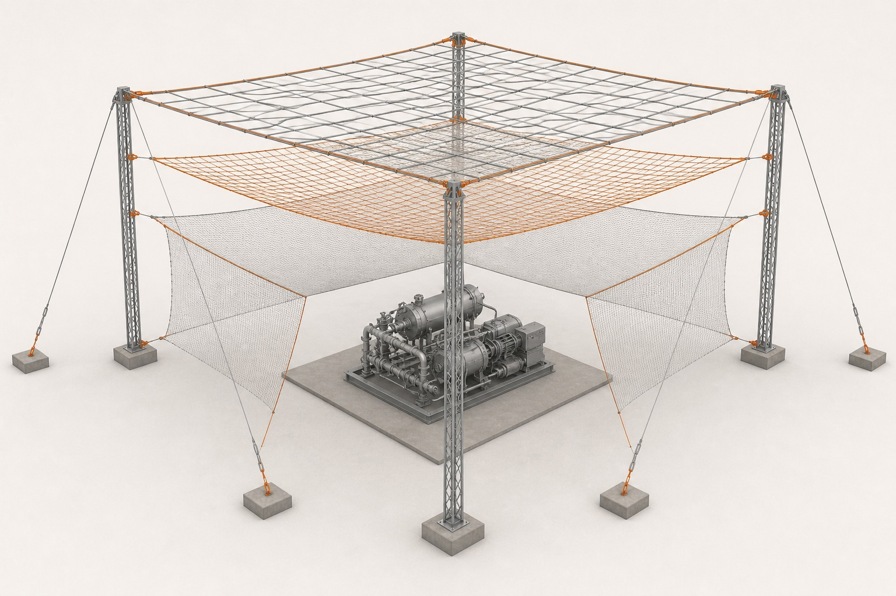
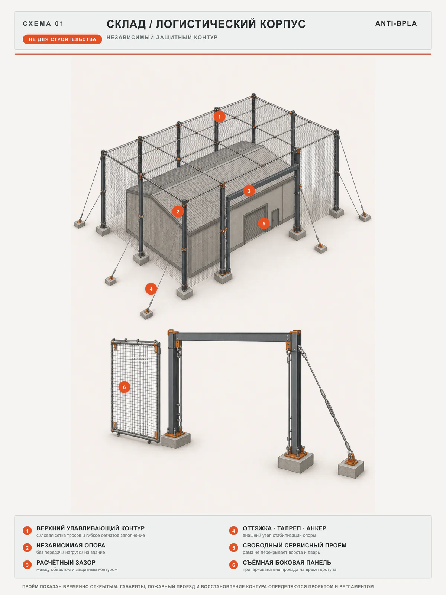
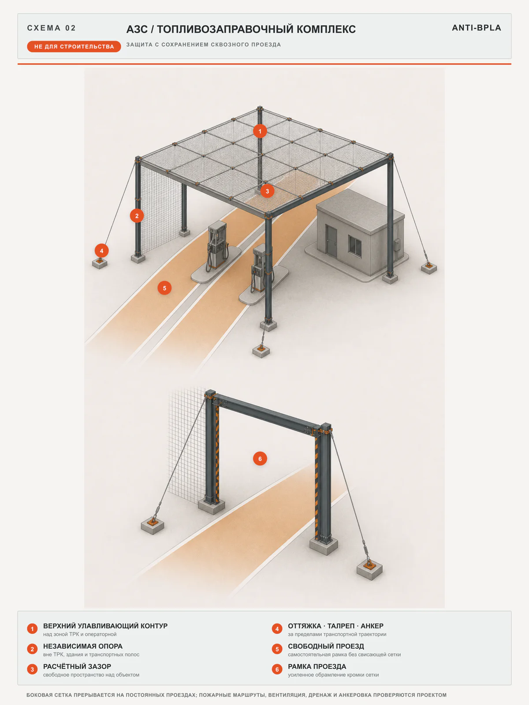
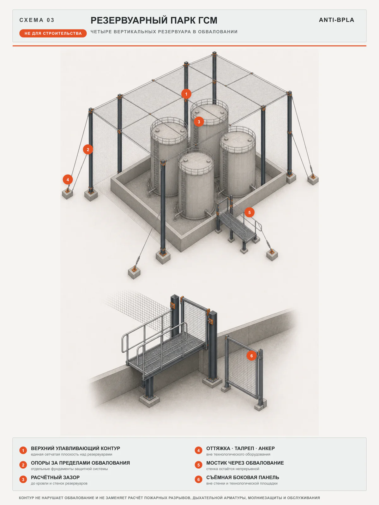
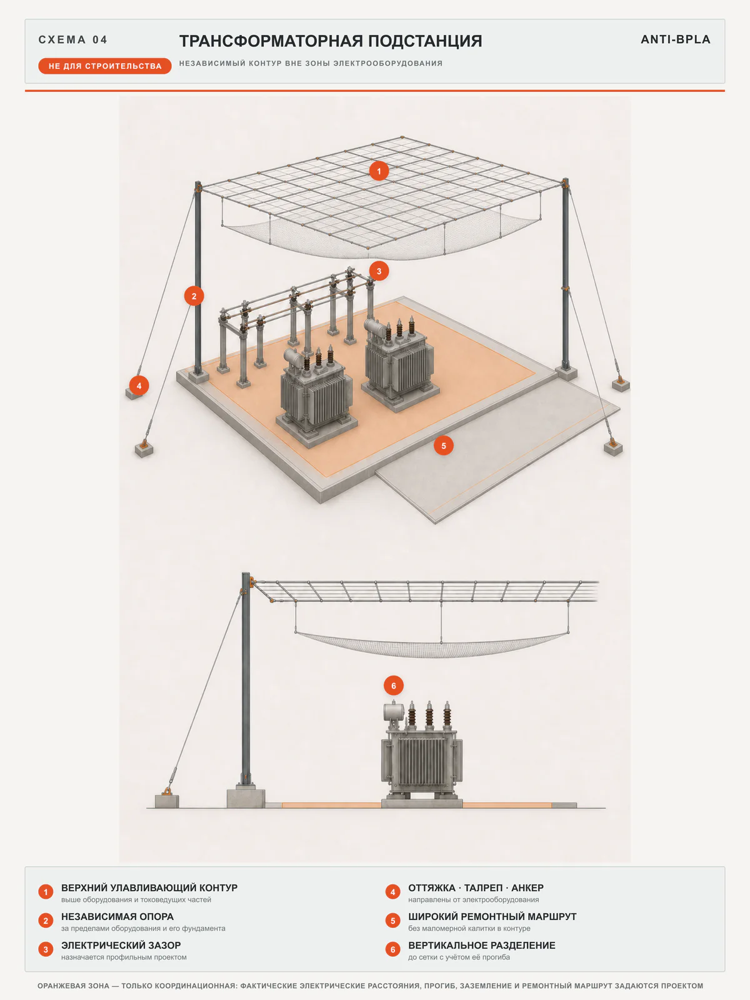
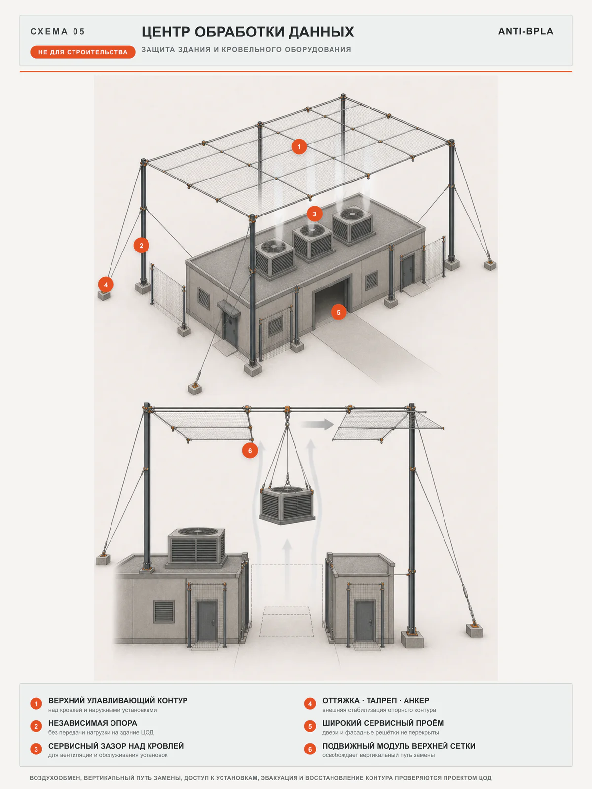

Обследование
Уязвимые зоны и исходные данные
Указ № 604 от 24 августа 2026 года: неэффективность мер защиты критической инфраструктуры может повлечь временное управление активами.
Что изменилось
Инженерная защита критической инфраструктуры
Проектируем защитные ограждающие конструкции под геометрию объекта, режим эксплуатации, климатические нагрузки и требования СП 542.1325800.2024.
Для первого разговора не нужны точный адрес и режимные документы.
Независимый защитный контур над критическим оборудованием
Уязвимые зоны и исходные данные
Конструкция под объект и угрозу
Изготовление, логистика и монтаж
Комплект для эксплуатации и контроля
Правовой контекст · 2026
Указ Президента РФ № 604 допускает временное управление активами, если меры безопасности не приняты вовремя, нарушают требования или признаны неэффективными — в том числе против угроз с использованием БПЛА.
Значим не факт закупки, а обоснованность решения: обследование, расчёт, проект, реализация и эксплуатационные документы.
Указ не обязывает каждое предприятие установить конкретную систему и не означает автоматической национализации. Применимость требований определяется индивидуально. Информация на странице не является юридическим заключением.
Сначала — приоритеты
Критичность узла определяется не его ценой, а последствиями отказа для всей технологической цепочки.
Отказ одного узла способен остановить смежные процессы, отгрузку или энергоснабжение.
Пожар, разгерметизация и повреждение соседнего оборудования увеличивают масштаб аварии.
Осколки и аварийная остановка создают угрозу персоналу и экстренным службам.
Руководству нужны документы, которые объясняют выбор решения и порядок контроля.
Принцип работы
Его задача — не обещать абсолютную защиту, а отнести точку воздействия от критического оборудования и снизить тяжесть последствий в пределах расчётных параметров.

Концептуальная визуализация, не рабочая документация. Разнесение слоёв показано условно; геометрия, прогибы, материалы, преднатяжение и основания назначаются расчётом. Нормативный ориентир — СП 542.1325800.2024; открытый пример многоконтурного решения — патент RU 2859230.
Сопоставляем сценарии отказа и возможный ущерб.
Учитываем геометрию, расстояния и эксплуатационные зоны.
Подбираем несущую схему, материалы и крепления.
Предусматриваем проходы, проезды и ремонтные сценарии.
Объекты защиты
Часто разумнее начать с ограниченного перечня наиболее важных узлов. Приоритет определяется обследованием и анализом последствий отказа.
Позвонить мнеНефтебазы, резервуарные парки, насосные станции
Химия, металлургия, машиностроение, переработка
ТЭЦ, подстанции, трансформаторное оборудование
Склады, терминалы и распределительные центры
Транспорт, связь, ЦОД и жизнеобеспечение
Лабораторные и потенциально опасные площадки
Пять типовых ситуаций
На листах показано, что нельзя перекрывать защитой: ворота склада, транспортные полосы АЗС, обвалование резервуаров, электрические расстояния и путь замены оборудования ЦОД.

Ворота и дверь остаются свободными; боковая панель убирается из проезда.
Открыть полный лист
Обе транспортные полосы открыты; опоры, оттяжки и анкеры находятся снаружи.
Открыть полный лист
Обвалование не разрывается; доступ организован мостиком, опоры вынесены наружу.
Открыть полный лист
Опоры вынесены наружу; электрические расстояния и прогиб сети задаются профильным проектом.
Открыть полный лист
Сохраняются воздухообмен, фасадный доступ и вертикальный путь замены кровельной установки.
Открыть полный листВсе пять листов — принципиальные иллюстрации, а не строительные или расчётные чертежи. Реальная конфигурация определяется обследованием, расчётом и смежными разделами проекта.
Инженерные принципы
Окончательные материалы, расстояния и состав решения фиксируются после обследования, расчёта и согласования технического задания.
Собственные опоры и основания; геометрия и крепления — по исходным данным объекта.
Учитывает климатические нагрузки, осмотр и локальную замену повреждённых элементов.
Сохраняет проходы, проезды, пожарный доступ и работу других уровней защиты.
Без режимных документов
Расскажите тип объекта, регион и какое оборудование важно защитить. Точный адрес, схемы и сведения ограниченного доступа для первого разговора не нужны.
Детали и безопасный канал передачи материалов согласуем после звонка.
Нажмите кнопку — откроется набор номера. Обсудим задачу голосом и определим следующий шаг.
Позвонить мне Не передавайте по открытому каналу режимные материалы.Маршрут проекта
Состав этапов зависит от категории объекта, готовности исходных данных и границ ответственности сторон.
Тип объекта, критическое оборудование, регион и стадия проекта.
Результат: перечень нужных данныхПри необходимости — NDA и согласованный канал передачи материалов.
Результат: защищённые исходные данныеГеометрия, коммуникации, проезды и ограничения действующего объекта.
Результат: акт и исходные данныеГраницы защиты, расчёты, узлы, спецификации и организация монтажа.
Результат: согласованный комплект документацииИзготовление, логистика и работы по согласованному плану.
Результат: смонтированная системаИсполнительные документы, инструкции по осмотру и обслуживанию.
Результат: система в эксплуатационном контуреПроверяемые основания
Нормативная база зависит от категории, назначения и ведомственной принадлежности объекта. Финальный состав фиксируется в техническом задании и проекте.
Позвонить мнеМеры безопасности критической инфраструктуры и временное управление активами.
Правила проектирования защитных ограждающих конструкций от БПЛА.
Антитеррористическая защищённость объектов промышленности.
Требования безопасности объектов ТЭК не пересказываются на открытой странице.
Комплексный подход
Пассивные конструкции дополняют обнаружение, оповещение и законные средства противодействия — но не заменяют их.
Раннее выявление и классификация угрозы.
Не предотвращает контакт само по себеДействия персонала, остановка процессов, эвакуация.
Зависит от времени реакцииВоздействие на угрозу уполномоченными субъектами.
Требует законных полномочийСнижает риск прямого поражения и тяжесть последствий.
Работает в расчётных пределахКоротко о главном
Не нашли ответ? Обсудите объект без передачи чувствительных данных.
Позвонить мнеНет. Система проектируется под согласованные расчётные параметры и снижает риск в их пределах. Абсолютная гарантия была бы технически недостоверной.
Нет. Указ не называет конкретное оборудование. Состав достаточных мер определяется для каждого объекта индивидуально.
Во многих случаях — да. Порядок работ определяют после обследования с учётом производства, опасных зон, проездов и коммуникаций.
Требования к проходам, проездам, съёмным участкам и доступу фиксируются в техническом задании до проектирования.
Расчётом — по параметрам угрозы, типу оборудования, конструктивной схеме и требованиям безопасности. Универсальной цифры нет.
От геометрии, нагрузок, площадки, коммуникаций, требований к доступу, логистики, монтажа и состава документации — не только от площади.
Состав задаёт договор: обычно обследование, техническое задание, проектная или рабочая документация, спецификации, паспорта, исполнительные и эксплуатационные документы.
Не через публичную форму. Сначала согласуются NDA, состав данных, уровень доступа и защищённый канал обмена.
Безопасный первый шаг
Сообщите тип объекта, регион и оборудование. Инженер уточнит задачу и сформирует перечень исходных данных.
Точный адрес и режимные документы для первого обращения не нужны.